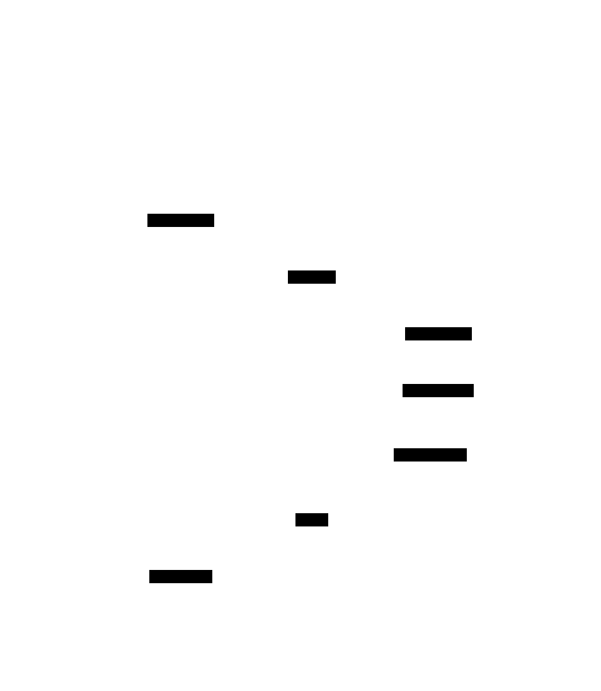

About arc42
arc42, the template for documentation of software and system architecture.
Template Version 8.2 EN. (based upon AsciiDoc version), January 2023
Created, maintained and © by Dr. Peter Hruschka, Dr. Gernot Starke and contributors. See https://arc42.org.
1. Introduction and Goals
The project that was proposed was implementing the "Game Y" (similar to the best-known board game "Hex"), all while mantaining a professional workflow simulating real life situations, covering all the aspects that could happen, these include:
-
Backend development
-
Frontend development
-
Management of the APIs
-
Overcome difficulties with new software
-
Quality control
If all of these are followed correctly the resulting project should go according to the theory.
1.1. Requirements Overview
-
The game will be available as a web application.
-
Players can register, log in, play matches, and have their results stored and accessible from their profile.
-
The game includes an AI opponent whose behavior depends on the selected difficulty, ranging from easy to hard.
1.2. Quality Goals
| Priority | Quality Goal | Scenario |
|---|---|---|
1 |
Usability |
A new player can register, log in, select a difficulty, and start a match against the bot in under 30 seconds without reading documentation. |
2 |
Performance |
For typical board sizes, bot move computation stays below 500 ms on "Hard" to keep gameplay fluid; worst cases must degrade gracefully (e.g., show a "thinking" state rather than freezing). |
3 |
Maintainability |
A new bot strategy or feature can be implemented and integrated in ⇐ 1 work day without breaking the existing frontend or any published API contract. |
4 |
Security |
Only authenticated users can submit results to their own profile; the system must prevent score spoofing attempts (e.g., forged results or manipulated game states). |
5 |
Reliability |
Game results are reliably persisted: at least 99% of save operations complete without data loss, and failures are reported explicitly (no silent loss). |
The top three (max five) quality goals for the architecture whose fulfillment is of highest importance to the major stakeholders. We really mean quality goals for the architecture. Don’t confuse them with project goals. They are not necessarily identical.
Consider this overview of potential topics (based upon the ISO 25010 standard):

You should know the quality goals of your most important stakeholders, since they will influence fundamental architectural decisions. Make sure to be very concrete about these qualities, avoid buzzwords. If you as an architect do not know how the quality of your work will be judged…
A table with quality goals and concrete scenarios, ordered by priorities
1.3. Stakeholders
| Role/Name | Contact | Expectations |
|---|---|---|
Project Sponsor (Micrati) |
Company (Micrati) |
Expects a working, publicly accessible web game with a clear architecture, documented APIs, and a deliverable aligned with the assignment scope and timeline. |
Project Supervisor (Teacher) |
Teaching Staff |
Expects a professional development workflow, clean and documented code, and fulfillment of all functional requirements (bot + web application). |
Development Team (Team) |
Team members |
Expect to learn new technologies (API management, frontend/backend), gain experience in professional workflows, and achieve a high grade. |
End Users (Players) |
Web |
Expect a functional and entertaining game, a challenging bot difficulty, and the ability to save their progress reliably. |
API Consumers (Bot developers / external clients) |
Public API |
Expect a stable and well-documented API contract, with clear error messages and examples. |
Quality Assurance (Team / reviewers) |
Team members |
Expect the code to be testable and the game to be free of critical bugs before deployment. |
2. Architecture Constraints
2.1. Technical Constraints
| Constraint | Background and/or Motivation |
|---|---|
Web-based Access |
The game must be accessible via a standard web browser (Chrome, Firefox, etc.) without requiring local installation. |
Public Deployment |
The application must be deployed and publicly accessible via the Web (academic delivery constraint). |
Backend/Frontend Separation |
The logic (APIs/services) and the presentation (UI) must be decoupled to keep clear client/server boundaries and enable independent development. |
Bot Implementation |
The system must include an algorithmic bot with selectable difficulty and/or multiple strategies (exact number of difficulty levels is not fixed). |
Persistence |
A database or persistent storage must be used to save player profiles and game history. |
YEN notation (JSON messages) |
Game state must be exchanged as JSON using YEN notation to ensure interoperability between modules. |
2.2. Organizational Constraints
| Constraint | Background and/or Motivation |
|---|---|
Team Structure |
Work is divided among students acting as a full-stack development team, requiring clear communication and task management. |
Deadline |
The project must be completed and documented within the academic semester timeframe. |
Technology adoption (learning curve) |
The project requires using technologies that are new to the team (e.g., Docker, TypeScript, Rust), which may affect planning and delivery. |
2.3. Conventions
| Constraint | Background and/or Motivation |
|---|---|
arc42 Documentation |
The software architecture must be documented using the arc42 template. |
Version Control |
Use of Git (e.g., GitHub or GitLab) is mandatory to track progress and manage collaborative code changes. |
YEN notation |
Use YEN notation in JSON messages whenever a game state is exchanged. |
3. Context and Scope
3.1. Business Context
The business context defines the external actors and how they interact with the YOVI system. The system exposes two public API surfaces (user management and game interaction) and delegates core game validation / bot move selection to the internal Rust engine.
| Communication Partner | Inputs | Outputs |
|---|---|---|
Human Player (Web client) |
Registration/login, game actions (moves), game configuration |
UI feedback, game state, personal profile and history |
External Client (Public User API consumer) |
Register/login, profile/history requests (JWT-based) |
JWT tokens, user/profile/history data |
External Client (Public Game API consumer) |
Game requests (create/join room, play), board state in YEN/JSON when required |
Game state updates, bot next move (when playing vs AI), error responses |
Operator (Project team / admin role) |
Service status queries (health) and basic operational requests |
Service status information and basic diagnostics |
3.1.1. Domain Interfaces
-
Web UI: React-based interface for end-user interaction.
-
Public User API: REST endpoints for registration/login and user profile/history.
-
Public Game API: REST endpoints to interact with the game (including playing against the bot using JSON/YEN).
3.2. Technical Context
The technical context describes the protocols and communication channels between services and external clients.
3.2.1. Technical Interfaces and Channels
| Interface | Channel / Protocol | Description |
|---|---|---|
Frontend ↔ Webapp-backend |
HTTP / REST |
The React application (Vite) communicates with the Node.js backend using REST endpoints. |
Frontend ↔ Webapp-backend (realtime) |
WebSocket |
Realtime channel used for gameplay/multiplayer events (when enabled). |
Webapp-backend ↔ gamey (Rust engine) |
HTTP / JSON (YEN) |
The Node.js service delegates game validation and bot move computation to the Rust engine. |
Webapp-backend ↔ users |
HTTP / REST |
Webapp-backend calls the users service for authentication/authorization and user-related operations. |
External clients ↔ users |
HTTP / REST |
Public user management API (register/login/profile/history). |
Users ↔ MariaDB |
MariaDB protocol |
Persistence of user data and credentials. |
3.2.2. Mapping of Inputs/Outputs to Channels
-
Access Management: Login/registration requests are handled by the Users service, which returns a JWT on success.
-
Move Processing: Game flow uses REST and/or WebSockets from client to Webapp-backend; bot move/validation is delegated to gamey via HTTP using JSON/YEN.
-
Persistence: User data and history are persisted in MariaDB via the Users service; additional persistence responsibilities are TBD (if introduced later).
4. Solution Strategy
The architecture of the YOVI system follows a modular client/server approach that separates the user interface from backend services and the core game engine. This strategy supports maintainability and interoperability by keeping clear boundaries between UI, user management, and game logic. The system exposes public APIs for user management and game interaction, while the Rust game engine remains internal and focused on validation and bot move computation.
4.1. Technology decisions
The web client is implemented in TypeScript to enable fast development of an interactive UI using modern web frameworks. Backend services are implemented as HTTP APIs, and the game engine is implemented in Rust for performance and memory safety when running validation and search-based bot strategies. Inter-service communication uses JSON and the YEN notation as the game-state contract.
4.2. Quality Goal Realization
Correctness and reliability are improved by enforcing game rules and validating YEN/JSON game states in the Rust engine. Usability is addressed through a simple web-based flow (register/login/start game) and a clear UI. Performance is addressed by using a compiled Rust engine for the computationally intensive bot logic and by keeping service calls bounded (timeouts) to avoid hanging requests. Maintainability is supported by the separation into services (webapp-backend, users, gamey) and stable API contracts between them. Security is handled through JWT-based authentication and role-based authorization (player/admin) for protected operations.
4.3. Organizational decisions
The system is developed by a four-member team with shared responsibilities across the stack. Version control and issue tracking support collaborative work and code quality through reviews and automated checks.
5. Building Block View
The building block view shows the static decomposition of the system into building blocks (modules, components, subsystems, classes, interfaces, packages, libraries, frameworks, layers, partitions, tiers, functions, macros, operations, data structures, …) as well as their dependencies (relationships, associations, …)
This view is mandatory for every architecture documentation. In analogy to a house this is the floor plan.
Maintain an overview of your source code by making its structure understandable through abstraction.
This allows you to communicate with your stakeholder on an abstract level without disclosing implementation details.
The building block view is a hierarchical collection of black boxes and white boxes (see figure below) and their descriptions.

Level 1 is the white box description of the overall system together with black box descriptions of all contained building blocks.
Level 2 zooms into some building blocks of level 1. Thus it contains the white box description of selected building blocks of level 1, together with black box descriptions of their internal building blocks.
Level 3 zooms into selected building blocks of level 2, and so on.
See Building Block View in the arc42 documentation.
5.1. Whitebox Overall System
- Rationale
-
We applied functional decomposition to separate responsibilities within the YOVI system and keep clear client/server boundaries.
- Contained Blackboxes
| Building Block | Description |
|---|---|
Web Frontend |
Browser-based TypeScript application. Renders the Y game board, handles user interaction, and communicates with the public APIs via REST (and WebSockets when realtime gameplay is enabled). |
webapp-backend (Game API / BFF) |
Node/TypeScript service exposing the public Game API (match flow, play actions, game-related statistics). Orchestrates calls to |
users service (User API / Auth) |
Service exposing the public User API (register/login/profile). Issues and verifies JWTs, applies basic authorization (roles), and is the only component that accesses MariaDB. |
gamey (Rust engine) |
Rust service responsible for validating game states and computing the next move. Uses YEN notation for board representation and exposes a minimal JSON-based web service interface to |
Database (MariaDB) |
Persistent storage for user accounts and credentials/roles. Accessed exclusively by the |
Player (external) |
Human user interacting through the Web Frontend to play matches and manage their account. |
External client (external) |
Any third-party client consuming the public APIs (User API and/or Game API) over HTTP, e.g., automated gameplay clients. |
5.2. Level 2
5.2.1. Level 2 - webapp-backend (Game API / BFF)
| Building Block | Description |
|---|---|
Routes |
Single entry point for the public APIs exposed by |
MatchService |
Encapsulates game workflow logic: creating matches/rooms, updating board states, and coordinating validation and next-move computations. Calls |
RustClient |
HTTP client responsible for invoking the |
5.2.2. Level 2 - users service (User API / Auth)
| Building Block | Description |
|---|---|
Routes |
Handles HTTP requests entering the User API. Delegates to UserService. |
UserService |
Business logic for authentication and user operations (issue/verify JWTs, profile management, role checks). Coordinates persistence via UserRepository. |
UserRepository |
Persistence component managing user accounts and credentials/roles (create, read, update, delete). Accessed exclusively via UserService. |
5.2.3. Level 2 - gamey (Rust engine)
| Building Block | Description |
|---|---|
Axum API |
Minimal internal HTTP interface invoked by |
YENAdapter |
Parses and serializes YEN/JSON game states and converts them to/from internal board representation. |
Validator + Bot |
Enforces game rules and computes next moves. |
6. Runtime View
The runtime view describes the behaviour and interactions of the system’s building blocks through selected scenarios. It captures how the TypeScript Web Application and the Rust Module cooperate to fulfill the requirements.
6.1. Human vs Computer Match
This scenario references the high-level requirement: Classic version of Game Y, player-vs-machine mode. It covers the logic when a human player makes a move on the board.
6.1.1. Quality Context
Source |
Human Player |
Stimulus |
Selects a position on the board via the Web Frontend |
Artifact |
System (Web App + Rust Module) |
Environment |
Normal operation |
Response |
The move is validated, if the game ends the result is persisted, and the board is updated |
Response Measure |
The UI reflects the new state in less than 0.5 seconds |
6.1.2. Interaction sequence
1. User selects a position on the board via the Web Frontend.
2. Web Application (TypeScript) sends a JSON message in YEN notation to the Rust Module to verify the move.
3. Rust Module verifies if the move is valid and if the match has ended.
4. Rust Module returns the result (Move valid/Match won/Match continues) to the Web Application.
5. If the game ended the Web Application updates the game state in the MariaDB database and reflects the new state in the Web Frontend anyways.
6.2. User Registration and History Consultation
This scenario references the high-level requirement: Users will be able to register and consult participation history. It describes how a user interacts with the system to manage their profile and view their match history.
6.2.1. Quality Context
Source |
Human Player |
Stimulus |
Provides registration details via the Web Frontend |
Artifact |
System (Web App) |
Environment |
Normal operation |
Response |
Redirects the user to the game app and allows to view the match history |
Response Measure |
The UI reflects the new state in less than 0.5 seconds |
6.2.2. Interaction sequence

Figure 1. User registration
|

Figure 2. History consultation
|
1. User provides registration details through the Web Frontend.
2. Web Application (TypeScript) receives the request and validates the information with the data on the MariaDB database.
3. When the registered User requests their history, the Web Application queries the MariaDB database for the raw data.
4. The Web Application then calculates the history metrics and returns them to the Web Frontend for rendering.
6.3. Computer Strategy Execution
This scenario references the high-level requirement: The game against the computer must implement more than one strategy. It describes how the system suggests of executes a move for the computer.
6.3.1. Quality Context
Source |
Human Player |
Stimulus |
Provides a computer difficulty level via the Web Frontend |
Artifact |
System (Web App + Rust Module) |
Environment |
Normal operation |
Response |
The GameEngine works with the strategy according to the difficulty level chosen |
Response Measure |
The UI reflects the new state in less than 1 seconds |
6.3.2. Interaction sequence

1. Web Application (TypeScript) triggers a request for a computer move based on the user-selected difficulty/strategy.
2. The request is sent to the Rust Module containing the current board state in YEN notation.
3. Rust Module invokes the selected strategy algorithm to calculate the next move.
4. Rust Module suggests the next move via its Web Service Interface.
5. Web Application receives the move and performs the action.
6.4. External Bot Interaction
This scenario references the high-level requirement: API will enable a bot to play… a 'play' method will be exposed. It describes the interaction of an external bot with the YOVI system.
6.4.1. Quality Context
Source |
External Bot |
Stimulus |
Invokes the API 'play' method providing a 'boardState' in YEN notation |
Artifact |
System (Web App + Rust Module) |
Environment |
Normal operation |
Response |
The system validates the input, processes game logic via the Rust module, and returns the result |
Response Measure |
The API returns the next move in YEN notation in less than 1 seconds |
6.4.2. Interaction sequence

1. External Bot calls the 'play' method on the External API (Web Application).
2. The request includes a 'boardState' parameter, the board state in YEN notation.
3. Web Application forwards the state to the Rust Module for the best’s move calculation.
4. Rust Module returns the updated state/result to the Web Application.
5. Web Application returns the next move to the External Bot using YEN notation.
7. Deployment View
The deployment view describes the physical environment in which the YOVI system is executed and the automation processes that manage its lifecycle.
7.1. Infrastructure Level 1: Cloud Environment
The system is deployed on the Microsoft Azure cloud platform, using the "Azure for Students" subscription. A system with the following capabilities was deployed looking for a compromise between performance and cost:
-
Location: France Central
-
Operating System: Linux Ubuntu
-
Hardware Profile: Standard B2ats v2 (2 vCPUs, 1 GiB memory)
7.2. Infrastructure Level 2: Execution Environment (Docker)
The system follows a "Cattle" not "Pets" approach, using containerization to ensure consistency between development and production.
Container |
Technology |
Responsibility |
Web Application |
TypeScript / Node.js |
Handles the UI, User sessions, and API requests. |
Game Engine |
Rust |
Performs game logic validation and strategy suggestions. |
Database |
MariaDB |
Persistent storage for users and match history. |
Monitoring |
Prometheus / Grafana |
Observability of system health (Ports 9090/9091). |
7.3. Network and Connectivity
The Virtual Machine is configured with a Public IP and specific inbound port rules as required by the project specifications:
-
Port 80/443: Public access to the Web Application.
-
Port 3000/4000: Internal service communication.
-
Port 22: Restricted SSH access for automated deployment.
-
Ports 9090/9091: Monitoring and metrics data.
7.4. Deployment Pipeline (CI/CD)
The system utilizes GitHub Actions for Continuous Deployment (CD). The process is triggered automatically when a new release is created or a version tag is pushed.

-
Automation: Configuration is stored as YAML files in
.github/workflows. -
Artifact Management: Docker images are built and stored in the GitHub Container Registry (GHCR).
-
Secrets Management: Sensitive data (IP addresses, SSH keys, DB passwords) are stored as GitHub Actions Secrets and injected into the environment at runtime.
7.4.1. Documentation Deployment
Following the "Documentation as Code" principle, our arc42 documentation is automatically built and published.
-
Automation: A dedicated GitHub Action tracks changes in the
docs/directory. -
Build Process: The action executes
npm installandnpm run buildto generate the HTML version of this arc42 documentation from the AsciiDoc source files. -
Publication:
-
The system uses the
gh-pagesnpm package to automate the transfer of generated files. -
The build result is pushed to the
gh-pagesbranch of the repository. -
The documentation is then hosted and accessible via GitHub Pages at the project’s public URL.
-
8. Cross-cutting Concepts
This section describes overall, principal regulations and solution ideas that are relevant in multiple parts (= cross-cutting) of your system. Such concepts are often related to multiple building blocks. They can include many different topics, such as
-
models, especially domain models
-
architecture or design patterns
-
rules for using specific technology
-
principal, often technical decisions of an overarching (= cross-cutting) nature
-
implementation rules
Concepts form the basis for conceptual integrity (consistency, homogeneity) of the architecture. Thus, they are an important contribution to achieve inner qualities of your system.
Some of these concepts cannot be assigned to individual building blocks, e.g. security or safety.
The form can be varied:
-
concept papers with any kind of structure
-
cross-cutting model excerpts or scenarios using notations of the architecture views
-
sample implementations, especially for technical concepts
-
reference to typical usage of standard frameworks (e.g. using Hibernate for object/relational mapping)
A potential (but not mandatory) structure for this section could be:
-
Domain concepts
-
User Experience concepts (UX)
-
Safety and security concepts
-
Architecture and design patterns
-
"Under-the-hood"
-
development concepts
-
operational concepts
Note: it might be difficult to assign individual concepts to one specific topic on this list.

See Concepts in the arc42 documentation.
8.1. YEN - JSON Game State (domain contract)
- Purpose
-
Represent the state of a Game Y match at a particular point of time. Domain contract between
webapp-backend←→gamey. - Format
-
The game state is serialized as JSON using YEN notation.
{
"size": 4,
"turn": "R",
"players": [ "B", "R" ],
"layout": "B/.B/RB./B..R"
}- Minimal invariants
-
-
size: integer > 0.
-
turn: must be a player ID from the players list.
-
players: an array holding player IDs, currently "B" and "R".
-
layout: string representation of the board, '/' is the separator and '.' represents an empty cell.
-
The system responds with a 4xx error for invalid states (see 8.2 / 8.2.1).
-
- Compatibility
-
-
We only publish one version of the API as part of M1, and we’re not too concerned about backward compatibility.
-
Any breaking change must be reflected in the documentation and contract tests.
-
8.2. REST conventions
- Scope
-
-
Applies to:
-
webapp-backend→frontend -
webapp-backend→users -
webapp-backend→gamey
-
-
- Conventions
-
-
JSON as the default payload format.
-
HTTP status codes:
-
2xx success, 4xx client/request/validation/auth error, 5xx internal/server error.
-
-
Timeouts and retries:
-
Calls to
gamey/usersmust use finite timeouts. -
Do not automatically retry non-idempotent operations (if any exist).
-
-
Recommended headers
-
Content-Type: application/json
-
Accept: application/json
-
-
8.3. Authentication and authorization
- Scope
-
-
Applies to public endpoints exposed by
users(authentication/user management) and to protected endpoints inwebapp-backend(game interaction).
-
- Authentication
-
-
usersacts as the auth server: it issues JWTs and verifies them (HS256). -
Clients send JWTs in
Authorization: Bearer <token>;webapp-backendmay also verify them when protecting endpoints.
-
- Authorization
-
-
Role-based access control with roles:
playerandadmin. -
Default rule: a user can only access/modify their own data; admin-only operations (if any) require
admin.
-
8.4. Backend for Frontend (BFF)
- Principles
-
-
The frontend only consumes
webapp-backend. -
usersandgameyare not accessible from the browser (no direct routing and no CORS exposure).
-
- Motivation
-
-
Simplifies the frontend and centralizes auth and service composition in one place.
-
8.5. Development concepts
- Rules
-
-
Trunk-based development with short-lived branches.
-
Changes reach trunk (master) only via Pull Request.
-
Mandatory checks before merge: at least 1 human approval + green CI.
-
Pull Requests are merged using squash merge to keep a linear history.
-
Merge without feature flags to prioritize simplicity.
-
8.6. User Experience (UX)
TBD
…
8.7. Configuration and secrets
- Rules
-
-
Environment-specific configuration is injected from the outside (e.g., environment variables in compose/CI).
-
Secrets (keys, tokens, passwords) are never committed to the repo and never baked into images; local dev uses a non-committed
.env. -
Do not log secret, mask if needed.
-
9. Architecture Decisions
9.1. ADR-001: BFF + internal services (REST)
| Field | Description |
|---|---|
Status |
APPROVED |
Context |
Browser-facing API should be centralized; system is split into webapp (frontend + backend), users, and gamey. |
Decision |
Use webapp-backend as a Backend-for-Frontend (BFF); the BFF calls users and gamey via REST. |
Consequences |
Browser talks only to BFF; orchestration and cross-cutting concerns (auth, validation, timeouts) are centralized. |
9.2. ADR-002: Internal endpoints between BFF and gamey
| Field | Description |
|---|---|
Status |
APPROVED |
Context |
gamey provides core game logic (win verification + bot move selection); BFF must check health and request moves. |
Decision |
Expose a minimal internal HTTP API in gamey: |
Consequences |
Small, stable internal surface; requires consistent contracts for YEN and coordinate encoding. |
9.3. ADR-003: YEN/JSON as game state contract + validation in gamey
| Field | Description |
|---|---|
Status |
APPROVED |
Context |
Game state must follow YEN notation; invalid states must be rejected. |
Decision |
Exchange game state as JSON following YEN; validate YEN in gamey and return a JSON error on invalid input. |
Consequences |
Single source of truth for domain validation; BFF maps validation failures to 4xx for clients. |
9.4. ADR-004: Stateless engine + no game state persistence in M1
| Field | Description |
|---|---|
Status |
APPROVED |
Context |
M1 prioritizes end-to-end functionality; persisting full game states is out of scope for M1. |
Decision |
Keep gamey stateless; do not persist game state in M1. |
Consequences |
Each request must carry full required state; simpler deployment/testing for M1. |
9.5. ADR-005: API versioning
| Field | Description |
|---|---|
Status |
NOT APPROVED |
Context |
Breaking changes may happen; a versioning policy was proposed early. |
Decision |
(Not approved) URL-based versioning and “major bump rules” are not decided yet; avoid committing to |
Consequences |
No premature coupling to a versioning scheme; versioning can be introduced later (or via headers) if needed. |
9.6. ADR-006: JWT signing algorithm
| Field | Description |
|---|---|
Status |
APPROVED |
Context |
The users service acts as the auth server: it issues tokens and also verifies them; the webapp (BFF and/or frontend) receives tokens and may verify them when needed. |
Decision |
Use HS256 for JWT signing/verification (shared secret) for M1. |
Consequences |
Simple setup and fast verification; secret must be protected across components that verify tokens. |
9.7. ADR-007: Secrets/config injection mechanism
| Field | Description |
|---|---|
Status |
APPROVED |
Context |
Secrets must not be stored in git; configuration must work locally and in CI/CD. |
Decision |
Use environment variables for configuration; store sensitive values as GitHub Actions Secrets and inject them into the deployment as env vars; local dev uses dotenv ( |
Consequences |
Consistent secret values across deployments; requires discipline to avoid leaking env values in logs. |
9.8. ADR-008: Error response envelope
| Field | Description |
|---|---|
Status |
APPROVED |
Context |
Multiple services/clients need consistent error handling. |
Decision |
Standardize JSON error responses with: |
Consequences |
Simpler client-side mapping and debugging; requires stable error codes over time. |
9.9. ADR-009: BFF → Game Service timeouts
| Field | Description |
|---|---|
Status |
PROPOSED |
Context |
Bot computation and network calls may be slow/fail; BFF must stay responsive. |
Decision |
Apply timeouts for BFF → gamey requests; allow strictly bounded retries only for safe idempotent operations. |
Consequences |
Prevents hanging requests; retries must be conservative to avoid overload during outages. |
9.10. ADR-010: User persistence and minimal user entity
| Field | Description |
|---|---|
Status |
APPROVED |
Context |
users must persist accounts; we need credentials and basic authorization. |
Decision |
Persist user accounts; minimal user entity includes: |
Consequences |
Enables authentication and basic admin features; requires clear password hashing rules and role-based authorization checks. |
9.11. ADR-011: Client/Server entrypoint and public APIs
| Field | Description |
|---|---|
Status |
APPROVED |
Context |
Client/server architecture: browser client (SPA) calls server APIs over HTTP; we want a single public entrypoint. |
Decision |
Expose: |
Consequences |
Clear boundaries between “user management” and “game” concerns; simpler documentation and security rules per API. |
9.12. ADR-012: Reverse proxy for path-based routing (Nginx)
| Field | Description |
|---|---|
Status |
PROPOSED |
Context |
Single public port must serve the SPA and route requests to backend APIs; full API gateway is overkill. |
Decision |
Use Nginx to route by path: |
Consequences |
One clean entrypoint with simple routing rules; adds a lightweight component to configure and maintain. |
10. Quality Requirements
10.1. Quality Tree
10.2. Quality Scenarios
This section makes quality requirements concrete through a quality tree and measurable scenarios, referencing the quality goals defined in section 1.2 Quality Goals where applicable. The quality-attribute taxonomy follows ISO/IEC 25010 (product quality: usability, performance efficiency, reliability, security, maintainability, compatibility, portability, etc.). The YOVI system consists of a TypeScript web application and a Rust module exposed via a web interface, communicating through JSON messages and YEN notation to represent game states.
Scenarios make quality requirements precise by stating stimulus, response, and measurable criteria (usage scenarios and change scenarios).
| ID | Type | Stimulus | Response | Measure / Acceptance criteria |
|---|---|---|---|---|
Usage |
A new player accesses the web application for the first time. |
They can register, log in, and start a game against the bot. |
Completes the flow in < 30 s without needing a manual (quality goal 1). |
|
Usage |
A player starts a game and makes a move. |
The UI responds without noticeable blocking and reflects the new state. |
Main interaction (render + local confirmation) does not exceed 500 ms on the client (TBD: might measure in the future). |
|
Usage |
A standard REST request to the Node/Express backend (e.g., login/profile) that does not require Rust computation. |
The system responds with the result. |
p95 ⇐ 50 ms for ~10 concurrent users (internal target). |
|
Usage |
The backend invokes the Rust service health-check endpoint. |
It receives OK/FAIL and can degrade functionality if FAIL. |
p95 ⇐ 50 ms. |
|
Usage |
A player/bot requests “choose next move” from the Rust module (Random strategy or Minimax with alpha-beta + iterative deepening). |
The service returns a valid move in the expected format. |
|
|
Change |
A new bot strategy or difficulty adjustment is added to the Rust module. |
The feature is integrated without breaking the frontend or API contracts. |
Effort ⇐ 1 work day, and the /play endpoint contract remains compatible (quality goal 3). |
|
Change |
Board-size support is extended/refactored within the allowed range. |
The change does not require rewriting the UI or persistence layer. |
Localized changes and updated tests; the YEN/JSON format is not broken. |
|
Usage |
A game ends and the result is saved to MariaDB. |
The result is persisted and appears in the user’s history. |
99% of save operations without losing the result (quality goal 4); on failure, an explicit error is returned and no match is “confirmed” as saved when it was not. |
|
Usage |
The VPS suffers downtime/restarts (low availability, short-lived operation). |
The system becomes operational again after restart, even if live sessions are lost. |
Service recovers after restart (TBD: ⇐ 5 min) and keeps already persisted data (no backups). |
|
Usage |
An unauthenticated user tries to submit a score/result or access private data. |
The backend rejects the operation. |
Only authenticated users can submit scores to their own profile (quality goal 5). |
|
Usage |
An authenticated user attempts to forge results: submit results without having played, manipulate the state/input (e.g., YEN) to obtain an illegitimate score. |
The backend validates consistency and rejects the operation. |
“Score spoofing” is prevented for those two scenarios (quality goal 5); replay © will be addressed when a global scoring system exists. |
|
Usage |
A malicious client attempts brute force / spam against server-side “users” endpoints. |
The system limits and logs the abuse. |
Rate limiting enabled (TBD: thresholds per IP/user) and security-event logs. |
|
Usage |
A third party implements a bot using the public API. |
They can integrate without reverse engineering. |
API is “fully documented” (OpenAPI/Swagger + examples) as required by the assignment. |
|
Usage |
An error occurs in a match (Node or Rust) or latency increases. |
The team diagnoses the issue using metrics/logs. |
Minimum metrics (p95 latencies, error rate, Rust health) and logs with correlation-id (TBD implementation). |
|
Change |
Team reviews the architecture and decisions. |
They can trace decisions and quality attributes. |
Clear documentation (complete arc42) and relevant decisions recorded (e.g., ADR) per evaluation criteria. |
11. Risks and Technical Debts
This section lists identified technical risks and technical debts, ordered by priority. Risk management enables proactive decision-making and informs stakeholders (project managers, teaching staff) about architectural concerns.
11.1. Technical Risks
| ID | Priority | Impact | Mitigation |
|---|---|---|---|
R-01 (Minimax algorithm does not scale beyond board size 11) |
HIGH |
The current Minimax implementation (alpha-beta + iterative deepening) cannot handle boards of size 11+ within acceptable time limits; this limits the "variable board size" requirement. |
|
R-02 (Rust service failure blocks gameplay) |
HIGH |
If the Rust module (win verification + move suggestion) becomes unavailable, players cannot continue games against the bot. |
|
R-03 (WebSocket technology adoption unproven) |
HIGH |
The team has not tested WebSocket integration for real-time multiplayer; lack of experience increases risk of incomplete implementation or bugs. |
|
R-04 (Lack of observability in production) |
HIGH |
Without metrics and correlation-based logging, diagnosing errors or performance issues in the deployed VPS will be difficult. |
|
R-05 (Team inexperience with stack) |
MEDIUM |
The team is relatively inexperienced with the chosen stack (React/Node/Rust), which may slow development and increase bug rate. |
|
R-06 (Scope creep from optional features) |
MEDIUM |
The assignment includes many optional features (variants, i18n, mobile, undo, hints, etc.); the team has not yet decided which to implement, risking overcommitment. |
|
R-07 (Documentation contains TBD sections) |
MEDIUM |
Arc42 documentation is up-to-date and API documentation is exhaustive, but some sections still contain "TBD" placeholders. |
|
11.2. Technical Debt
| ID | Debt | Impact / Plan |
|---|---|---|
TD-01 (SonarQube slows development velocity) |
SonarQube quality gates are enabled and catch issues early, but they slow down the development workflow (additional checks, required fixes before merge). |
|
| Test coverage is currently >= 80% across the codebase, which is acceptable. Score spoofing validation is implemented in the Rust module (validates YEN state integrity server-side). CI/CD pipeline for deployment is already operational. Rate limiting is not prioritized (low risk in academic/closed project context). VPS availability is low (cheap Azure instance, no backups), but this risk is accepted given the academic scope. |
12. Glossary
| Term | Definition |
|---|---|
YOVI |
System name: a web-based platform to play Game Y through a browser and public APIs. |
Game Y |
Board game implemented by the system, including a player-vs-bot mode. |
Micrati |
Company behind the project in the assignment context (project sponsor). |
Web Frontend |
Browser-based TypeScript SPA that renders the board UI and interacts with backend APIs via HTTP (and WebSockets when enabled). |
SPA (Single-Page Application) |
Web application that loads once and updates the UI dynamically by calling backend APIs. |
webapp-backend |
Backend that exposes the public Game API and acts as orchestration layer (BFF) towards internal services (notably |
BFF (Backend for Frontend) |
Pattern where a single backend endpoint is tailored to a specific frontend, centralizing orchestration and cross-cutting concerns. |
users (service) |
Service responsible for authentication and user management, exposing the public User API (e.g., register/login/profile) and persisting user data in MariaDB. |
User API (Public User API) |
Public HTTP API surface for user management (register/login/profile) provided by the |
Game API (Public Game API) |
Public HTTP API surface for game interaction (match flow/play actions) provided by |
gamey (Rust engine) |
Internal Rust service that validates game states and computes bot moves; invoked by |
YEN |
Notation used to represent a Game Y state (board size, players, turn, and layout), exchanged as JSON between services. |
YEN/JSON game state |
JSON payload that encodes the game state following YEN; invalid states must be rejected by the engine. |
JSON |
Default payload format used in the system APIs and service-to-service communication. |
REST |
HTTP-based style used for request/response APIs in the system. |
WebSocket |
Bidirectional communication channel used for realtime gameplay/multiplayer events when enabled. |
JWT (JSON Web Token) |
Token format used for authentication; clients send it via |
HS256 |
HMAC-SHA256 algorithm used to sign/verify JWTs using a shared secret. |
Authentication |
Process of proving identity (who a user/client is), handled by the |
Authorization |
Process of deciding permissions (what a user can do), implemented as role-based checks (e.g., |
Role (player/admin) |
User permission label used for authorization decisions. |
MariaDB |
Relational database used by the |
ADR (Architecture Decision Record) |
Short document describing an important architectural decision, its context, and consequences. |
arc42 |
Software architecture documentation template used to structure this documentation (sections 1–12). |
M1 |
First milestone focused on end-to-end functionality. |
Error envelope |
Standard JSON structure for error responses using |
requestId |
Identifier included in error responses to correlate client-visible failures with server-side logs/traces. |